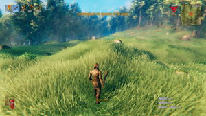

事件
本站支持中英文站内搜索。带 ↗ 的链接指向外部网站；各页来源版本见页脚。


随机事件会在玩家周围生成大量敌人。随着击败首领、推进世界进度，更难的事件会出现。根据使用的世界修正设置，事件可依据世界进度或玩家进度触发；默认采用世界进度。
大多数事件需要玩家留在正在进行的事件区域内，直至计时结束才能结束。若事件区域内没有玩家，计时暂停，“你正在被追猎……”事件除外。
每46分钟有20%概率触发随机事件；
- 可用事件取决于哪些敌人已经被 击败 于游戏世界中。
- 大多数事件需要击败某个首领才会解锁，详见“解锁条件”列。
- 部分事件在击败某个首领后永久禁用，详见“禁用条件”列。
- 除非启用基于玩家进度的袭击，否则若袭击列出两种生物，例如巨魔和古树长老，必须在该世界中击杀过这两种生物，袭击才会解锁。
- 若启用基于玩家进度的袭击：
- 大多数事件取决于玩家已获取哪些放逐之力和材料。
- 部分事件还会检查玩家击败过哪些敌人。
- 对于每个事件，检查是否有玩家满足以下条件：
- 玩家位于所需生态区，详见“生态区”列。
- 玩家不在地下城中。
- 玩家40米内至少有3个基地建筑。“你正在被追猎……”事件不要求满足此条件。
- 若有可用事件，从中随机选择一个。
- 从符合条件的玩家中随机选择一人，在其所在位置开始事件。
事件列表
基于世界进度的事件条件
| 事件名称 | 开始消息 | 结束提示 | 生物 | 解锁条件 | 禁用条件 | 生态区 | 持续时间（秒） |
|---|---|---|---|---|---|---|---|
| army_eikthyr | “赤血灵鹿正在召集森林中的生物。” | "生灵渐渐平息." | 鬓猪 与 蜥蜴精 | 世界创建时 | 赤血灵鹿 | 青青草原 或 黑暗林山 | 90 |
| army_theelder | "树林在移动……" | "树林恢复了平静." | 灰矮人, 灰矮人暴徒 与 灰矮人萨满 | 赤血灵鹿 | 古树长老 | 青青草原, 黑暗林山, 幽暗沼泽,或 北境平原 | 120 |
| army_bonemass | “沼泽中飘来一股恶臭……” | "味道飘散了." | 尸鬼 与 骷髅怪 | 古树长老 | 邪骨恶灵 | 青青草原, 黑暗林山, 幽暗沼泽, 凛冽雪山,或 北境平原 | 150 |
| army_moder | “一阵寒风从雪山吹来。” | "寒风停息了." | 霜龙
(同样适用 冻僵 打开该区域) |
邪骨恶灵 | 冰霜龙母 | 青青草原, 黑暗林山, 幽暗沼泽, 凛冽雪山,或 北境平原 | 150 |
| army_goblin | "部落在发起进攻" | "部落在撤退." | 丑地精, 丑地精狂战士 与 丑地精萨满 | 冰霜龙母 | 亚格鲁斯 | 青青草原, 黑暗林山,或 北境平原 | 120 |
| army_gjall | “怎么了，加尔？！” | “再见，加尔。” | 加尔 与 壁虱幼虫 | 亚格鲁斯 | 蛊虫之后 | 迷雾之地 | 90 |
| army_seekers | “它们找上了你。” | “搜寻结束了。” | 邪蛛探索者, 邪蛛幼雏 与 邪蛛士兵 | 亚格鲁斯 | 蛊虫之后 | 黑暗林山, 北境平原, 迷雾之地, 灰烬之地,或 极北之地 | 90 |
| army_charred | "亡灵军队行军." | "军队回防." | 灰烬僵尸, 焦骨射手 与 灰烬战士 | 蛊虫之后 | 青焰龙王 | 黑暗林山, 北境平原, 迷雾之地, 灰烬之地,或 极北之地 | 90 |
| army_charredspawners | "亡灵已被召唤." | “亡者再次归于沉寂。” | 苦难之碑 （袭击结束后也不会消失） | 蛊虫之后 | 青焰龙王 | 黑暗林山, 北境平原, 迷雾之地, 灰烬之地,或 极北之地 | 90 |
| army_jotuns | "巨人已经找到你." | "巨人撤退." | 巨人战士 与 厄妖 | 巨人战士 或 巨人巫师 | 凌冽·芬布尔使者 | 青青草原, 黑暗林山, 幽暗沼泽, 凛冽雪山, 北境平原, 迷雾之地 或 极北之地 | 90 |
| army_elakingar | "来自下面的敌人,……" | "它们回到洞穴中……" | 厄妖 与 无眼者 | 无眼者 | 凌冽·芬布尔使者 | 极北之地 | 90 |
| 森林巨怪 | "地面正在晃动." | “震动逐渐平息。” | 巨魔 | 巨魔 与 古树长老 | 青青草原, 黑暗林山, 幽暗沼泽,或 北境平原 | 80 | |
| 软泥怪 | “沼泽中飘来一股恶臭……” | "味道飘散了." | 软泥怪 与 大型软泥怪 | 邪骨恶灵 | 青青草原, 黑暗林山, 幽暗沼泽,或 北境平原 | 120 | |
| 幽灵 | “你感到脊背发凉……” | “它们暂时被驱逐了……” | 幽灵 与 鬼魅 | 邪骨恶灵 | 青青草原, 黑暗林山, 幽暗沼泽, 凛冽雪山,或 北境平原 | 150 | |
| 骷髅怪 | “骷髅的突袭！” | “骷髅厌倦了战斗。” | 骷髅怪 与 腐臭遗骸 | 邪骨恶灵 | 青青草原, 黑暗林山, 幽暗沼泽, 凛冽雪山, 北境平原,或 迷雾之地 | 120 | |
| 焰灵 | “空气中弥漫着硫磺气味……” | "味道散去了." | 焰灵 | 焰灵 与 邪骨恶灵 | 青青草原, 黑暗林山, 幽暗沼泽,或 北境平原 | 120 | |
| 狼 | “你正在被追猎……” | “追猎结束了。” | 狼 | 邪骨恶灵 | 凛冽雪山 或 北境平原 | 120 | |
| 邪蝠 | “你搅动了大锅。” | “大锅恢复平静。” | 邪蝠 | 邪蝠 与 邪骨恶灵 | 任意 | 120 | |
| hildirboss1 | “她正紧追着你！” | "她被烧伤了." | 布伦娜, 骷髅怪、以及 腐臭遗骸 | 黄铜宝箱 返回到 希尔德 | 任意 | 90 | |
| hildirboss2 | "你感到了一股寒意" | "你可以放松警惕了." | 盖尔哈法, 芬里、以及 狂信徒 | 银 宝箱 返回到 希尔德 | 任意 | 90 | |
| hildirboss3 | "他们可是兄弟啊，大哥." | “你又一次打破了规矩……” | 吉尔 与 吞格尔, 丑地精、以及 丑地精狂战士 | 青铜 宝箱 返回到 希尔德 | 任意 | 90 |
玩家主动触发的事件
| 事件名称 | 开始消息 | 结束提示 | 生物 | 触发条件 | 结束条件 | 生态区 | 持续时间（秒） |
|---|---|---|---|---|---|---|---|
| 巨人侵略 | "巨人进军" | 巨人巫师, 巨人战士 与 厄妖 | 摧毁 邪恶之冰 在 莫克哈拉 | 摧毁 邪恶之冰 位于入侵中心的 | 青青草原, 黑暗林山, 幽暗沼泽, 凛冽雪山,或 北境平原 | 无限，直至事件结束 |
基于玩家进度的条件
选择基于玩家进度的事件时，可出现的事件与基于世界进度的事件相同，但解锁和禁用条件不同。
| 事件名称 | 击败后启用 | 启用所需的被遗忘者之力 | 启用所需物品 | 禁用所需的被遗忘者之力 | 禁用所需物品 |
|---|---|---|---|---|---|
| army_eikthyr | 赤血灵鹿之力 | 鹿角镐, 青铜镐, 赤血灵鹿战利品, 硬鹿角 或 铁镐 | |||
| army_theelder | 赤血灵鹿之力 | 鹿角镐, 青铜镐 赤血灵鹿战利品, 硬鹿角 或 铁镐 | 古树长老之力 | 古树长老战利品 或 沼泽钥匙 | |
| army_bonemass | 古树长老之力 | 古树长老战利品 或 沼泽钥匙 | 邪骨恶灵能力 | 邪骨恶灵战利品 或 愿望骨 | |
| army_moder | 邪骨恶灵能力 | 邪骨恶灵战利品 或 愿望骨 | 冰霜龙母能力 | 龙之泪 或 冰霜龙母战利品 | |
| army_goblin | 龙之泪 或 冰霜龙母战利品 | 亚格鲁斯之力 | 裂魂 或 亚格鲁斯战利品 | ||
| army_gjall | 裂魂, 冥火 或 冥火之光 | 蛊虫之后之力 | 蛊虫之后物品 | ||
| army_seekers | 裂魂, 冥火 或 冥火之光 | 蛊虫之后之力 | 蛊虫之后物品 | ||
| army_charred | |||||
| army_charredspawners | |||||
| 森林巨怪 | 巨魔 与 古树长老 | 古树长老战利品 或 沼泽钥匙 | |||
| 软泥怪 | 邪骨恶灵能力 | 邪骨恶灵战利品 或 愿望骨 | |||
| 幽灵 | 邪骨恶灵能力 | 邪骨恶灵战利品 或 愿望骨 | 冰霜龙母能力 | 龙之泪 或 冰霜龙母战利品 | |
| 骷髅怪 | 邪骨恶灵能力 | 邪骨恶灵战利品 或 愿望骨 | |||
| 焰灵 | 焰灵 与 邪骨恶灵 | 邪骨恶灵战利品 或 愿望骨 | |||
| 狼 | 邪骨恶灵能力 | 邪骨恶灵战利品 或 愿望骨 | |||
| 邪蝠 | 邪蝠 与 邪骨恶灵 | ||||
| hildirboss1 | 布伦娜 | 黄铜宝箱 | |||
| hildirboss2 | 盖尔哈法 | 银 宝箱 | |||
| hildirboss3 | 吉尔与吞格尔 | 青铜 宝箱 |
生成机制
- 敌人可在任何生态区、天气或昼夜时段生成。
- 生成的敌人始终处于追猎模式，更容易锁定目标，也更难失去敌意。
- “最大生成数”表示数量上限，以及事件开始时尝试生成的数量。
- 除非另有说明，“抑制距离”为10米。
| 名称 | 机会 | 间隔 | 最大生成数 | 最低海拔 | 其他 |
|---|---|---|---|---|---|
| army_eikthyr | |||||
| 蜥蜴精 | 100 % | 20s | 2 | 0m | |
| 鬓猪 | 100 % | 20s | 2 | 0m | |
| army_theelder | |||||
| 灰矮人 | 100 % | 5s | 6 | 0m | 无抑制距离，群体1-3只，群体半径3米。 |
| 灰矮人萨满 | 100 % | 5s | 1 | 0m | |
| 灰矮人暴徒 | 100 % | 5s | 1 | 0m | |
| 灰矮人幼体 | 100 % | 5s | 4 | 0m | 无抑制距离，群体1-3只，群体半径3米。 |
| army_bonemass | 强制沼泽雨天环境 | ||||
| 尸鬼 | 100 % | 5s | 3 | -1 m | |
| 骷髅怪 | 100 % | 5s | 6 | -1 m | |
| army_moder | 强制雪天环境 | ||||
| 霜龙 | 100 % | 10s | 3 | -1 m | 最大坡度90，离地偏移10米。 |
| army_goblin | |||||
| 丑地精 | 58.2 % | 10s | 8 | 0m | 群体1-4只，群体半径1米 |
| 丑地精狂战士 | 47 % | 20s | 2 | 0m | |
| 丑地精萨满 | 47 % | 20s | 1 | 0m | |
| army_gjall | |||||
| 加尔 | 100 % | 40s | 1 | 0m | |
| 壁虱幼虫 | 100 % | 20s | 4 | 0m | 0-2星 |
| army_seekers | |||||
| 邪蛛探索者 | 100 % | 35s | 3 | 0m | |
| 邪蛛幼雏 | 100 % | 20s | 8 | 0m | |
| army_charred | |||||
| 灰烬射手 | 100 % | 50s | 3 | 0m | |
| 灰烬僵尸 | 100 % | 40s | 3 | 0m | |
| 灰烬战士 | 100 % | 50s | 2 | 0m | |
| army_charredspawners | |||||
| 苦难之碑 | 100 % | 60s | 3 | 0m | 50米生成抑制距离 |
| 灰烬僵尸 | 100 % | 40s | 3 | 0m | |
| 狼 | |||||
| 狼 | 100 % | 2s | 6 | 0m | |
| 骷髅怪 | |||||
| 骷髅怪 | 100 % | 10s | 20 | -1 m | 群体4-6只，群体半径4米 |
| 腐臭遗骸 | 54 % | 15s | 1 | -1 m | |
| 软泥怪 | 强制雷暴环境 | ||||
| 软泥怪 | 100 % | 2s | 5 | -1 m | 群体1-3只，群体半径1米 |
| 大型软泥怪 | 100 % | 10s | 2 | -1 m | |
| 幽灵 | 强制幽灵环境 | ||||
| 幽灵 | 100 % | 10s | 3 | -1 m | 最大坡度90，离地偏移10米。 |
| 鬼魅 | 100 % | 10s | 2 | -1 m | 最大坡度90，离地偏移10米。 |
| 森林巨怪 | |||||
| 巨魔 | 100 % | 20s | 2 | 0m | |
| 焰灵 | 强制灰烬雨环境 | ||||
| 焰灵 | 100 % | 2s | 4 | 1m | |
| 邪蝠 | |||||
| 邪蝠 | 100 % | 10s | 10 | 任何地点 | 群体2-4只，群体半径4米，最大坡度90。 |
| hildirboss1 | |||||
| 布伦娜 | 100 % | 100s | 1 | 0m | |
| 骷髅怪 | 100 % | 20s | 4 | 0m | 群体1-2只，群体半径1米，星级1-2。 |
| 腐臭遗骸 | 100 % | 100s | 1 | 0m | 1-2星 |
| hildirboss2 | |||||
| 盖尔哈法 | 100 % | 100s | 1 | 0m | |
| 芬里 | 100 % | 30s | 3 | 0m | 群体1-2只，群体半径1米，星级1-2。 |
| 狂信徒 | 100 % | 100s | 1 | 0m | 1-2星 |
| hildirboss3 | |||||
| 吉尔与吞格尔 | 100 % | 100s | 1 | 0m | |
| 丑地精 | 100 % | 20s | 4 | 0m | 群体1-2只，群体半径1米，星级1-2。 |
| 丑地精狂战士 | 100 % | 100s | 1 | 0m | 1-2星 |
说明
- 事件区域半径96米，显著大于可见红圈的64米半径。
- 多人游戏中，只要任意玩家位于事件区域内，事件计时就会推进。
- 不过，只有区域的拥有者位于事件区域内时，才会生成事件敌人。
- 事件不会针对地下城内的玩家触发。同样，即使地下城位于事件区域内，身处其中也不会推进事件。
- 新事件触发时，若已有事件正在进行，先前事件会自动结束。
- 生态区检查采用玩家所在位置的准确生态区，可在展开的小地图上悬停查看，而非根据区域角点计算的平均生态区；后者显示在较小的小地图上。
- 基地建筑 会抑制生物生成，影响事件期间敌人的生成位置。基地建筑覆盖足够大时，可能完全阻止敌人生成。
- 敌人在距玩家40-80米处生成，因此可能出现在事件区域之外。
- 游戏不会记录生物的死亡原因。因此，即使玩家尽力避免击杀某种生物以阻止相关事件，环境因素，例如焰灵走入水中，或相邻生态区的战斗，例如牦牛与巨魔交战，仍可能为该世界或玩家解锁这些事件。
- 事件敌人以“追猎模式”生成，始终处于警戒，并能获知200米内玩家的位置。
- 生成软泥怪和大型软泥怪的事件不会损伤建筑，因此玩家关好门后便不会有危险。
- 驯服生物很容易在事件中被杀死。例如，“你搅动了大锅”事件会生成蝙蝠，对圈养在没有屋顶的围栏内的弱小驯服生物，尤其是野猪，特别危险。
| 攻略 | |
|---|---|
| 玩家 | |
| 战斗 | |
| 生成 | |
| 建材 | |
| 界面 | |
| 世界 | |
| 杂项 | |
| 开发 | |
Randomly happening events cause lots of enemies to spawn around the players. Progressing in the game world by defeating bosses causes harder events to appear. Events can be world-based or player-based depending on the world modifier settings in use. World-based events are the default mode.
For most events to end, a player must stay in the active event area until the timer runs out. The event timer is paused if there are no players in the event area (except for the "You are being hunted..." event).
Every 46 minutes there is a 20% chance for a random event;
- Available events are based on which enemies have been defeated in the game world.
- Most events require defeating a boss to become available (see Enabled by column).
- Some events are permanently disabled after defeating a boss (see Disabled by column).
- Unless player-based raids is enabled, if a raid lists two mobs (e.g. Troll and The Elder), both those mobs must have died on that world for the raid to be enabled.
- If player based raids are enabled:
- Most events are based on which Forsaken powers and materials the player has acquired.
- Some events also check which enemies the player has defeated.
- For each event, check that any of the players fulfills the following conditions:
- The player is in the required biome (see Biome column).
- The player is not in a dungeon.
- The player is within 40 meters of at least 3 base structures. This is not required for the "You are being hunted..." event.
- Select a random event from possible events (if any).
- Select a random player from valid players and start the event at the player's position.
List of events
World-based event requirements
| Event Name | Start message | End message | Creatures | Enabled by | Disabled by | Biome(s) | Duration (Seconds) |
|---|---|---|---|---|---|---|---|
| army_eikthyr | "Eikthyr rallies the creatures of the forest." | "The creatures are calming down." | Boars and Necks | Start of the world | Eikthyr | Meadows or Black Forest | 90 |
| army_theelder | "The forest is moving..." | "The forest rests again." | Greydwarfs, Greydwarf Brutes and Greydwarf Shamans | Eikthyr | The Elder | Meadows, Black Forest, Swamp, or Plains | 120 |
| army_bonemass | "A foul smell from the swamp..." | "The smell is gone." | Draugr and Skeletons | The Elder | Bonemass | Meadows, Black Forest, Swamp, Mountain, or Plains | 150 |
| army_moder | "A cold wind blows from the mountains." | "The cold wind is gone." | Drakes
(Also applies Freezing on the area) |
Bonemass | Moder | Meadows, Black Forest, Swamp, Mountain, or Plains | 150 |
| army_goblin | "The horde is attacking!" | "The horde is retreating." | Fulings, Fuling Berserkers and Fuling Shamans | Moder | Yagluth | Meadows, Black Forest, or Plains | 120 |
| army_gjall | "What's up, Gjall?!" | "Good bye Gjall." | Gjall and Ticks | Yagluth | The Queen | Mistlands | 90 |
| army_seekers | "They sought you out." | "The search is over." | Seekers, Seeker Broods and Seeker Soldiers | Yagluth | The Queen | Black Forest, Plains, Mistlands, Ashlands, or Deep North | 90 |
| army_charred | "The undead army marches." | "The army retreats." | Charred Twitchers, Charred Marksmen and Charred Warriors | The Queen | Fader | Black Forest, Plains, Mistlands, Ashlands, or Deep North | 90 |
| army_charredspawners | "The dead have been summoned." | "The dead lie still once more." | Monument of Torments (won't despawn even after the raid is over) | The Queen | Fader | Black Forest, Plains, Mistlands, Ashlands, or Deep North | 90 |
| army_jotuns | "The Jotun have found you." | "The Jotun withdraw." | Krigens and Elakings | Krigen or Hexen | Kall Fimbulbringer | Meadows, Black Forest, Swamp, Mountain, Plains, Mistlands or Deep North | 90 |
| army_elakingar | "They emerge from below..." | "They return to their burrows..." | Elakings and Eyeless Ones | Eyeless One | Kall Fimbulbringer | Deep North | 90 |
| foresttrolls | "The ground is shaking." | "The shakes starts to fade." | Trolls | Troll and The Elder | Meadows, Black Forest, Swamp, or Plains | 80 | |
| blobs | "A foul smell from the swamp..." | "The smell is gone." | Blobs and Oozers | Bonemass | Meadows, Black Forest, Swamp, or Plains | 120 | |
| ghosts | "You feel a chill down your spine..." | "They have been banished, for now..." | Ghosts and Wraiths | Bonemass | Meadows, Black Forest, Swamp, Mountain, or Plains | 150 | |
| skeletons | "A skeleton surprise!" | "Skeletons are tired of fighting." | Skeletons and Rancid Remains | Bonemass | Meadows, Black Forest, Swamp, Mountain, Plains, or Mistlands | 120 | |
| surtlings | "There's a smell of sulfur in the air..." | "The smell is fading." | Surtlings | Surtling and Bonemass | Meadows, Black Forest, Swamp, or Plains | 120 | |
| wolves | "You are being hunted..." | "The hunt is over." | Wolves | Bonemass | Mountain or Plains | 120 | |
| bats | "You stirred the cauldron." | "The cauldron calms." | Bats | Bat and Bonemass | Any | 120 | |
| hildirboss1 | "She's hot on your tail!" | "She got burnt." | Brenna, Skeletons, and Rancid Remains | Brass Chest returned to Hildir | Any | 90 | |
| hildirboss2 | "You get the chills..." | "You can chill out." | Geirrhafa, Fenrings, and Cultists | Silver Chest returned to Hildir | Any | 90 | |
| hildirboss3 | "They were bros, man." | "You broke the code... again." | Zil and Thungr, Fulings, and Fuling Berserkers | Bronze Chest returned to Hildir | Any | 90 |
Player-initiated events
| Event Name | Start message | End message | Creatures | Started by | Ended by | Biome(s) | Duration (Seconds) |
|---|---|---|---|---|---|---|---|
| Jotun Invasion | "The Jotun advance" | Hexen, Krigen and Elaking | Destroying Malicious Ice in Mörkhalla | Destroying Malicious Ice in the center of the invasion | Meadows, Black Forest, Swamp, Mountain, or Plains | Unlimited (until ended) |
Player-based requirements
The events available when player-based events are selected are the same as for world-based events but with different requirements to enable and disable them.
- Events are enabled by fulfilling any of the requirements.
- For example Trolls are enabled by gaining a Swamp Key even when no Trolls have been killed.
- Events are disabled by fulfilling any of the requirements.
- For example most boss events are disabled by either acquiring the next Forsaken power or a boss drop.
| Event name | Defeat to enable | Forsaken power to enable | Item to enable | Forsaken power to disable | Item to disable |
|---|---|---|---|---|---|
| army_eikthyr | Eikthyr power | Antler Pickaxe, Bronze Pickaxe, Eikthyr Trophy, Hard Antler or Iron Pickaxe | |||
| army_theelder | Eikthyr power | Antler Pickaxe, Bronze Pickaxe Eikthyr Trophy, Hard Antler or Iron Pickaxe | Elder power | The Elder Trophy or Swamp Key | |
| army_bonemass | Elder power | The Elder Trophy or Swamp Key | Bonemass power | Bonemass Trophy or Wishbone | |
| army_moder | Bonemass power | Bonemass Trophy or Wishbone | Moder power | Dragon Tear or Moder Trophy | |
| army_goblin | Dragon Tear or Moder Trophy | Yagluth power | Torn Spirit or Yagluth Trophy | ||
| army_gjall | Torn Spirit, Wisp or Wisplight | Queen power | Queen drop | ||
| army_seekers | Torn Spirit, Wisp or Wisplight | Queen power | Queen drop | ||
| army_charred | |||||
| army_charredspawners | |||||
| foresttrolls | Troll and The Elder | The Elder Trophy or Swamp Key | |||
| blobs | Bonemass power | Bonemass Trophy or Wishbone | |||
| ghosts | Bonemass power | Bonemass Trophy or Wishbone | Moder power | Dragon Tear or Moder Trophy | |
| skeletons | Bonemass power | Bonemass Trophy or Wishbone | |||
| surtlings | Surtling and Bonemass | Bonemass Trophy or Wishbone | |||
| wolves | Bonemass power | Bonemass Trophy or Wishbone | |||
| bats | Bat and Bonemass | ||||
| hildirboss1 | Brenna | Brass Chest | |||
| hildirboss2 | Geirrhafa | Silver Chest | |||
| hildirboss3 | Zil & Thungr | Bronze Chest |
Spawning mechanics
- Enemies can spawn in any biome, weather or time of the day.
- Spawned enemies are always in the hunt mode (easier targeting, harder to drop aggro).
- "Max spawn" means the max amount and how many spawns are attempted when the event starts.
- "Suppression distance" is 10 meters, unless otherwise specified.
| Name | Chance | Interval | Max spawn | Minimum altitude | Other |
|---|---|---|---|---|---|
| army_eikthyr | |||||
| Neck | 100 % | 20s | 2 | 0m | |
| Boar | 100 % | 20s | 2 | 0m | |
| army_theelder | |||||
| Greydwarf | 100 % | 5s | 6 | 0m | No suppression distance, group 1-3 with 3m radius |
| Greydwarf Shaman | 100 % | 5s | 1 | 0m | |
| Greydwarf Brute | 100 % | 5s | 1 | 0m | |
| Greylling | 100 % | 5s | 4 | 0m | No suppression distance, group 1-3 with 3m radius |
| army_bonemass | Forces swamprain environment | ||||
| Draugr | 100 % | 5s | 3 | -1 m | |
| Skeleton | 100 % | 5s | 6 | -1 m | |
| army_moder | Forces snow environment | ||||
| Drake | 100 % | 10s | 3 | -1 m | 90 max tilt, 10m offset from ground |
| army_goblin | |||||
| Fuling | 58.2 % | 10s | 8 | 0m | Group 1-4 with 1m radius |
| Fuling Berserker | 47 % | 20s | 2 | 0m | |
| Fuling Shaman | 47 % | 20s | 1 | 0m | |
| army_gjall | |||||
| Gjall | 100 % | 40s | 1 | 0m | |
| Tick | 100 % | 20s | 4 | 0m | 0-2 stars |
| army_seekers | |||||
| Seeker | 100 % | 35s | 3 | 0m | |
| Seeker Brood | 100 % | 20s | 8 | 0m | |
| army_charred | |||||
| Charred Marksman | 100 % | 50s | 3 | 0m | |
| Charred Twitcher | 100 % | 40s | 3 | 0m | |
| Charred Warrior | 100 % | 50s | 2 | 0m | |
| army_charredspawners | |||||
| Monument of Torment | 100 % | 60s | 3 | 0m | 50m suppression distance |
| Charred Twitcher | 100 % | 40s | 3 | 0m | |
| wolves | |||||
| Wolf | 100 % | 2s | 6 | 0m | |
| skeletons | |||||
| Skeleton | 100 % | 10s | 20 | -1 m | Group 4-6 with 4m radius |
| Rancid Remains | 54 % | 15s | 1 | -1 m | |
| blobs | Forces thunderstorm | ||||
| Blob | 100 % | 2s | 5 | -1 m | Group 1-3 with 1m radius |
| Oozer | 100 % | 10s | 2 | -1 m | |
| ghosts | Forces ghosts environment | ||||
| Ghost | 100 % | 10s | 3 | -1 m | 90 max tilt, 10m offset from ground |
| Wraith | 100 % | 10s | 2 | -1 m | 90 max tilt, 10m offset from ground |
| foresttrolls | |||||
| Troll | 100 % | 20s | 2 | 0m | |
| surtlings | Forces ashrain environment | ||||
| Surtling | 100 % | 2s | 4 | 1m | |
| bats | |||||
| Bat | 100 % | 10s | 10 | Anywhere | Group 2-4 with 4m radius, 90 max tilt |
| hildirboss1 | |||||
| Brenna | 100 % | 100s | 1 | 0m | |
| Skeleton | 100 % | 20s | 4 | 0m | Groups 1-2 with 1m radius, 1-2 stars |
| Rancid Remains | 100 % | 100s | 1 | 0m | 1-2 stars |
| hildirboss2 | |||||
| Geirrhafa | 100 % | 100s | 1 | 0m | |
| Fenring | 100 % | 30s | 3 | 0m | Groups 1-2 with 1m radius, 1-2 stars |
| Cultist | 100 % | 100s | 1 | 0m | 1-2 stars |
| hildirboss3 | |||||
| Zil & Thungr | 100 % | 100s | 1 | 0m | |
| Fuling | 100 % | 20s | 4 | 0m | Groups 1-2 with 1m radius, 1-2 stars |
| Fuling Berserker | 100 % | 100s | 1 | 0m | 1-2 stars |
Notes
- The event area (96 meters radius) is significantly bigger than the visual red circle (64 meters radius).
- In multiplayer, the event timer ticks when any of the players are in the event area.
- However event enemies are only spawned when the zone owner is in the event area.
- Events won't trigger for players who are inside dungeons. Similarly being in a dungeon won't progress events even when inside the event area.
- If an event is already running when a new one triggers, the previous event will automatically end.
- The biome check uses the exact biome at the player's position (which can be seen when hovering the bigger minimap) instead of the average biome based on zone corners (which can be seen on the smaller minimap).
- Base structures suppress spawns which affect where enemies can spawn during the events. Large coverage of base structures may completely prevent enemy spawning.
- Enemies are spawned 40-80 meters from players which allows them to spawn outside the event area.
- The source of death for a creature is not tracked. Therefore, despite a player's best efforts to not kill a certain creature to avoid certain events, the environment (e.g. a Surtling walking into water) or a neighboring biome (Lox fighting a Troll) can unlock those events for that world or player.
- Event enemies spawn in "hunt mode" which makes them always alerted and also know where players are located within 200 meters.
- An event spawning Blobs and Oozers can't deal damage to structures, so players that close their doors are not in any danger.
- Tamed creatures can easily be killed during events. For example, the "stirred the cauldron" event which spawns bats is especially dangerous for weaker tamed creatures (such as Boars) held in pens not covered by a roof.
| Guides | |
|---|---|
| Player | Player • Health • Stamina • Eitr • Adrenaline • Death • Forsaken power • Skills • Status effects • Movement speed • Magic • Fishing • Riding • Sleeping • Emotes |
| Combat | |
| Spawning | |
| Building | |
| UI | |
| World | |
| Misc | |
| Development | |